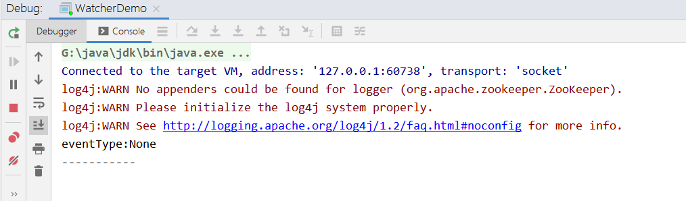
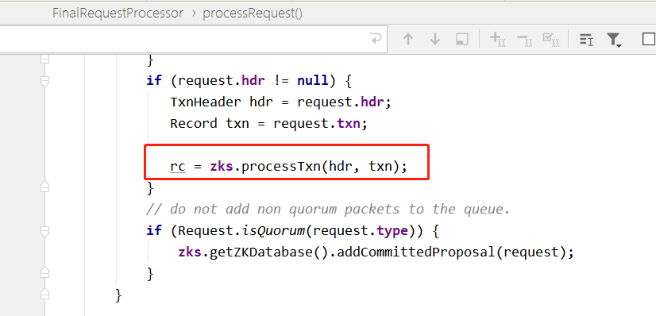
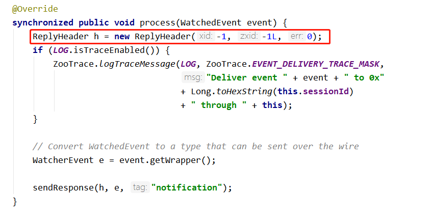
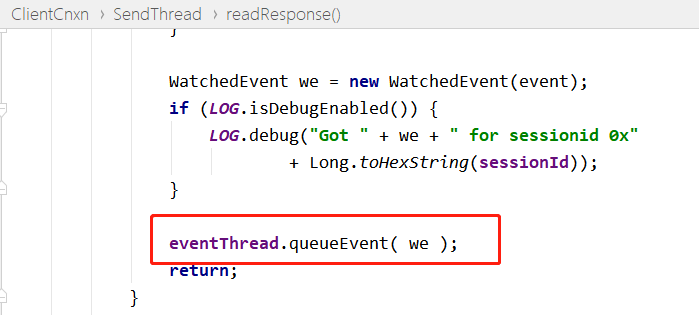

The Zookeeper watcher mechanism can be divided into four processes:
- Client registers watcher.
- Server processes watcher.
- Server triggers watcher event.
- Client callback watcher.
There are three ways for the client to register a watcher. The client API can be called via getData, exists, and getChildren respectively. Using the Maven project created in the previous chapter, create a WatcherDemo class and take the exists method as an example to illustrate the principle.
Example
static ZooKeeper zooKeeper;
static {
try {
zooKeeper = new ZooKeeper("192.168.3.39:2181", 4000,new WatcherDemo());
} catch (IOException e) {
e.printStackTrace();
}
}
@Override
public void process(WatchedEvent event) {
System.out.println("eventType:"+event.getType());
if(event.getType()==Event.EventType.NodeDataChanged){
try {
zooKeeper.exists(event.getPath(),true);
} catch (KeeperException e) {
e.printStackTrace();
} catch (InterruptedException e) {
e.printStackTrace();
}
}
}
public static void main(String[] args) throws IOException, KeeperException, InterruptedException {
String path="/watcher";
if(zooKeeper.exists(path,false)==null) {
zooKeeper.create("/watcher", "0".getBytes(), ZooDefs.Ids.OPEN_ACL_UNSAFE, CreateMode.PERSISTENT);
}
Thread.sleep(1000);
System.out.println("-----------");
//true indicates using the watcher configured in the Zookeeper instance
Stat stat=zooKeeper.exists(path,true);
System.in.read();
}
}
After running the program, the console displays:

Now start the Zookeeper command-line terminal, view and deletewatcherthe node:

IDE console output: the node deletion event was triggered:

The client sends requests to the server through a TCP long connection to establish a network channel. By default, the underlying implementation uses Java NIO, and it can also be configured to use Netty.

Flowchart of registering watcher listening events:

1. Client sends event notification request
When the Zookeeper class calls the exists method, the event listener creation is encapsulated into the request object with the watch attribute set to true. After the server returns a response, the listener event is encapsulated into the client's ZKWatchManager class.

2. Server processes the watcher event request
The server-side NIOServerCnxn class is used to process requests sent by the client, ultimately calling FinalRequestProcessor, where a piece of source code adds the watcher event sent by the client:

Then it enters the statNode method, adds the watcher event in the DataTree class method, and saves it to WatchManager's watchTable and watchTable.


3. Server triggers watcher event flow:
If a monitored node on the server receives a transaction request, during the server's processing of the request, the code in the processRequest method of the FinalRequestProcessor class is called as follows:

The deletion call chain eventually reaches the trigger code segment for the delete node branch in the DataTree class:

Enter the triggerWatch method of the WatchManager class:

Continuing to trace into NIOServerCnxn, it constructs a ReplyHeader object with xid of -1 and zxid of -1, and then calls the sendResonpe method.

4. Client callback for watcher event
The client's SendThread class readResponse method receives the event notification triggered by the server, enters the xid = -1 flow, and processes the Event.

